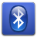

*** Za instalaciju ovih dodatnih programa treba vam internet, tako da ako jos niste uspostavili internet konekciju posetite Povezivanje na Internet stranicu.
Ovde se nalaze Bodhi AppCenter linkovi za pakete koji nisu instalirani po standardu(default) ali su najčešće traženi od korisnika.
Multimedia
Adobe Flash
Omogućava gledanje Flash sadržaja(npr. You Tube) na internetu. 32bit Bodhi Package / 64bit Bodhi Package
Omogućava gledanje Flash sadržaja(npr. You Tube) na internetu. 32bit Bodhi Package / 64bit Bodhi Package
Multi-media codecs
Dodatna podrška za razne ne-FOSS(Free Open Source Software) media formate. 32bit Bodhi Package / 64bit Bodhi Package
Dodatna podrška za razne ne-FOSS(Free Open Source Software) media formate. 32bit Bodhi Package / 64bit Bodhi Package
DVD Playback
Ovo ima svrhu da omogući pristup nekim naprednijim opcijama za DVD format. 32bit Bodhi Package / 64bit Bodhi Package
Ovo ima svrhu da omogući pristup nekim naprednijim opcijama za DVD format. 32bit Bodhi Package / 64bit Bodhi Package
Povezanost

Bluetooth
Povezivanje na druge uređaje sa Bluetooth-om. 32bit Bodhi Package / 64bit Bodhi Package
Povezivanje na druge uređaje sa Bluetooth-om. 32bit Bodhi Package / 64bit Bodhi Package
Administracija
Razni sistemski alati
Razni GUI programi za administraciju sistema. Bodhi AppCenter System Tools Directory
Razni GUI programi za administraciju sistema. Bodhi AppCenter System Tools Directory
NVIDIA Installer
Alat za lociranje i instalaciju video drajvera za NVIDIA grafičke karte. 32bit Bodhi Package / 64bit Bodhi Package
Alat za lociranje i instalaciju video drajvera za NVIDIA grafičke karte. 32bit Bodhi Package / 64bit Bodhi Package